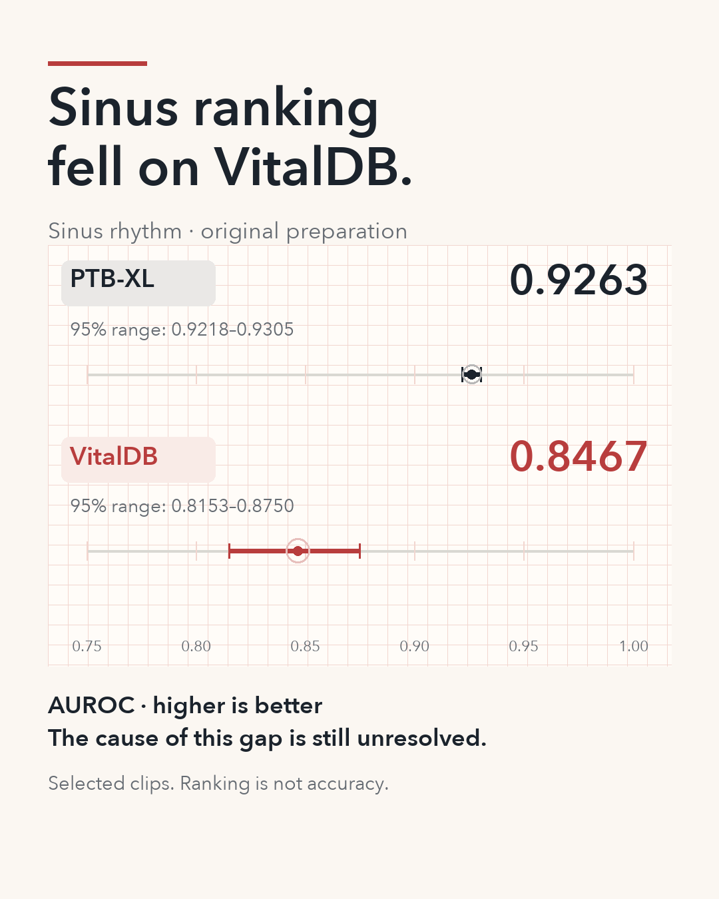

Pertzel Lab · Season 1 · Week 6
One person in their bedroom
I started this because it felt like I finally could.
I’ve never had formal training in writing code. Now AI can write code for me, which opens up work that previously felt out of reach. It saves me some of the time and energy of learning what feels like another language before I can get started.
It has also helped me understand complex topics I hadn’t studied before. It can explain things at the level I’m at, then help me go deeper as my understanding grows.
And I’m at a point in my life where I want to spend my energy and focus on things that genuinely excite me. Things I can grow in and go deep into. I’m using my time differently from how I did in my twenties. I’m now locking in and trying to develop my professional life.
That combination is what made this project possible for me.
What I set out to do
For the first six-week season of Pertzel Lab, I investigated an open AI model called ECGFounder. It reads ECGs, recordings of the heart’s electrical activity, and produces scores for different labels.
I was building on a model and public datasets that other teams had made available. My contribution was to investigate how its results held up.
There were two parts. First, could I reproduce its published results on a collection of resting ECGs called PTB-XL? Then, using its single-lead version, how did its results compare between resting recordings and recordings taken during surgery?
The broader question was how well the model travels. A result on one dataset does not automatically tell us what will happen on another.
“Maybe I’ve done something wrong”
I expected the first comparison to come out fairly close to the paper.
The headline result I had set out to compare was an average over thirty-one labels in the released data. It came out at about 0.891, against the paper’s reported 0.924. That was outside the tolerance I had set before the check.
My first reaction was: “That’s a surprise. Maybe I’ve done something wrong.”
So we investigated how the result had been produced. We checked the individual scores, the label mapping, and which labels and calculations went into the average. We also compared the two signal-preparation routes supplied with the model, as planned beforehand.
Twenty-nine of the thirty individual scores printed in the paper matched within 0.001. Sinus rhythm was the exception. But even restricting the average to those same thirty labels did not resolve the headline difference. Filtering changed some individual scores while barely moving the overall average.
On 21 October, I emailed the corresponding author, Dr Shenda Hong, asking about the average, the sinus-rhythm result, and the preparation methods and label counts.
The cause remained unexplained.
I feel good about including that in the paper because it’s honest. We investigated the difference and still couldn’t explain it. You can’t always resolve everything in a paper. I think it’s better to publish what we found and be transparent about what’s still unresolved.
0.8909 against 0.924, on one scale.
My number with its range on the left. The paper’s with its range on the right, inside the band I set in advance.
![My number for this model still sits below the paper’s. A scale from 0.88 to 0.94. Mine, 0.8909, with a short bar for its 95% range, resampling whole patients, sits to the left. The paper’s, 0.924, with a short bar for its 95% range as the paper states it, sits inside a shaded band set in advance, 0.914 to 0.934. Average score over 31 labels on 21,799 recordings: 0.0331 below the paper’s figure and outside the band. Working from the Mac’s saved model outputs, the PC rebuilt the same number; on a sample of 500 recordings its own outputs matched within the limit. It is still unexplained, and it goes in the write-up as open.](assets/week5-site-v3-9.png)
What my role actually involved
I wasn’t reviewing the code itself. I was looking at the inputs and outputs, and understanding how we organised and processed the data. I wanted to understand those decisions well enough to judge how much confidence I could place in the results.
One example was how we chose the cutoffs for calling a prediction positive: how high a model’s score had to be before it counted.
Those cutoffs belonged to the later comparison with surgical recordings. They were separate from the original reproduction, which compared AUROC, a measure of ranking that does not require one fixed positive/negative cutoff.
For the surgical comparison, we selected cutoffs using our PTB-XL analysis for each rhythm score and each signal-preparation route. We kept those cutoffs unchanged when we moved to the new data. If we started moving them to fit the results we wanted, we could make the model look better without answering our original question.
I wanted a consistent comparison. Studying how to adapt the cutoffs could be another experiment, with its own rules.
What happened on the surgical recordings
The surgical recordings came from VitalDB Arrhythmia. For this part, the same single-lead model read the same electrical view, lead II, in both datasets. This was a separate comparison from the twelve-lead reproduction.
We compared two label groups: sinus rhythm, and atrial fibrillation or flutter. The main surgical analysis contained 35,342 ten-second clips from 432 people. Many clips came from the same person.
The combined atrial fibrillation or flutter score ranked the labelled examples almost perfectly in both datasets. The sinus score did not hold up as well.
One way to understand its ranking result is to take a sinus-labelled example and an example labelled atrial fibrillation or flutter. How often does the model give the sinus example the higher sinus score? It did so in about 93 out of 100 such pairs on the resting recordings, compared with about 85 out of 100 on the surgical clips.
Those are rankings, not percentages of people diagnosed correctly.
I had expected the model to hold up more simply across the settings. These two scores told different stories.
Preparing the signal differently also mattered. The supplied filter improved the sinus ranking on the surgical clips, but made its probabilities less reliable by the calibration measure we used. Calibration checks whether the model’s scores line up with how often the label is actually present. Some errors at the fixed cutoffs fell; others rose.
So I couldn’t simply say that filtering made the model better. I had to say which result improved and what else changed.
The surgical clips were selected, labelled regions, not a random sample of a whole operation. The datasets also differ in equipment, patient mix and annotation. We measured a difference; we did not establish its cause or what it means for anyone’s health.
The sinus score on the two datasets.
0.9263 on the resting recordings (PTB-XL) and 0.8467 on the surgical clips (VitalDB): the two scores behind “about 93” and “about 85” out of 100 pairs.


Could another computer get my numbers?
I also wanted to know what another person might encounter when trying to reproduce the work.
A Windows PC ran the model again on a fixed sample of the original recordings. The compared outputs agreed within the pre-set tolerances. Then, using saved model outputs and source data, it rebuilt the numerical records and tables specified in the reproduction procedure.
Every regenerated result number matched. Two of the eleven tables still failed the check.
A note had been typed into those tables after the script made them. The note contained numbers, but it wasn’t part of the script’s recipe. When the PC re-created the tables, it couldn’t reproduce the note.
The recorded outcome is partly reproduced. Moving the note beside the tables afterwards did not change the original result.
This was a sampled model rerun followed by rebuilding the specified results from saved outputs. It was not a full rerun of every recording or an independent reproduction by another person.
I want someone else to be able to follow the recipe and understand what happened, including where it failed.
Every result number matched. It is still not called a pass.
One tick, one cross, and the rule that decides between them.

Why it matters to me
I initially started this project out of curiosity. I didn’t fully appreciate why it mattered until I got into it.
As I learned more, I began to see how significant this kind of technology could become for medicine. What excites me is the possibility that, if it proves useful and reliable in practice, AI could take some work off doctors and give them more time to provide better care.
I’d hope that means more attention for the individual patient in front of them. More capacity to see, diagnose and treat people. And hopefully, fewer mistakes.
Those are hopes for future care. This study did not measure doctors’ workload or patient outcomes, and it does not establish that ECGFounder is ready for clinical use.
But it has made me more interested in the field and what it might become.
Where the work stands
I submitted the manuscript to medRxiv on 18 November. It was declined at screening, and that decision was upheld after I asked for clarification. On 21 November I submitted it to a journal, which has confirmed receiving it. The manuscript has not been peer reviewed.
The supporting materials are already public: the code and scientific records, the reference outputs and supporting files, and the guide and runnable code package.
The reference files support rebuilding the tables and numerical records named in the reproduction procedure. They do not reconstruct every result in the paper or replace the original datasets.
The unresolved headline difference is still in the work. So are the limits of the surgical comparison and the second-computer check. I want other people to be able to look at the evidence and try the procedure themselves.
I’ve come away with a simple thought: now more than ever, it’s possible for one person in their bedroom to contribute to the future of healthcare.
And that’s amazing.
The work builds on ECGFounder, PTB-XL v1.0.3, VitalDB v1.0.0, and VitalDB Arrhythmia v1.0.0.
The weekly record behind this article.
This article looks back over the season. Each week’s report gives its results in detail.
- Week 2 · Checking a published result
- Week 3 · Preparing ECG data for testing the AI fairly
- Week 4 · The same model, tested on recordings from surgery
- Week 5 · Every result number matched, and the check still failed
This work does not provide health advice or establish clinical benefit.